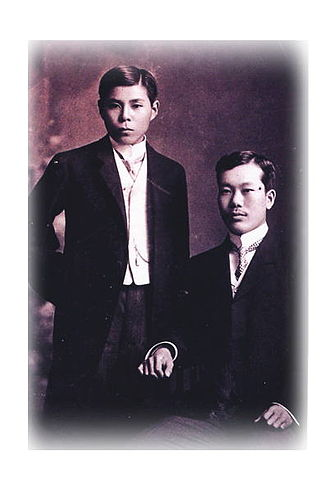

Bội Châu sinh năm 1867 tại thôn Sa Nam, xã Đông Liệt, huyện Nam Đàn, tỉnh Nghệ An trong một gia đình nhà nho nghèo. Bố ông là Phan Văn Phổ làm nghề dạy học, mẹ là Nguyễn Thị Nhàn - một người phụ nữ nhân hậu, đảm đang. Quê hương, gia đình đã có ảnh hưởng lớn tới tư tưởng của ông.
Ngay từ nhỏ, Phan Bội Châu tỏ ra thông minh và hiếu học hơn người. Lúc 8 tuổi ông đã học xong tứ thư ngũ kinh và biết làm thơ theo thể thơ cổ Trung Quốc. Lớn lên trong cảnh đất nước bị quân xâm lược Pháp đô hộ, Phan Bội Châu đã sớm ý thức được trách nhiệm của mình đối với tổ quốc. Ông cùng với những người cùng chí hướng tìm cách đánh đuổi giặc pháp mà việc thành lập Duy Tân Hội và tổ chức phong trào Đông Du là hoạt động cứu nước tiêu biểu.
Năm 1882, khi thực dân Pháp đánh chiếm Bắc Kì lần hai, Phan Bội Châu đã viết hịch “Bình Tây thu Bắc”, kêu gọi nhân dân đứng dậy đánh Pháp. Năm 1885, xảy ra vụ biến kinh thành Huế, chiếu Cần vương được ban ra, Phan Bội Châu liền lập ra đội “Thí Sinh Quân” hưởng ứng chiếu Cần Vương kháng Pháp. Năng 1901, ông cùng các đồng chí của mình mưu đánh úp thành Nghệ An nhưng không thành: Qua đó, phan Bội Châu hiểu rằng muốn kháng Pháp thắng lợi cần phải gây dựng đồ đảng chuẩn bị lực lượng. Vì vậy vào năm 1904, ông cùng nuột số sĩ phu yêu nước thành lập Hội Duy Tân, mà những nhiệm vụ trước mắt của Hội là:
1. Phát triển lực lượng hội về người cũng như về tài chính.
2. Xúc tiến việc chuẩn bị bạo động và các công việc sau đó.
3. Chuẩn bi xuất dương cầu viện, xác định phương châm và thủ đoạn xuất dương.Nhiệm vụ xuất dương và cầu viện được xác định có ý nghĩa, vai trò quan trọng nên Phan Bội Châu và Nguyễn Hàm nhận lãnh phụ trách.
Năm 1905, Phan Bội Châu cùng với Tăng Bạt Hổ, Đặng Tử Kính lên đường sang Nhật mong cầu viện, nhưng khi sang đến nơi chính phủ Nhật đã từ chối giúp đỡ. Mặc dù vậy chuyến đi Nhật đầu tiên cũng tạo cơ hội cho Phan Bội Châu tiếp xúc với Lương Khải Siêu - người khởi xướng phong trào cải cách ở Trung Quốc cuối thế kỉ XIX. Lương Khải Siêu đã khuyên Phan Bội Châu trước mắt nên làm hai việc:
+ Viết sách báo nói rõ thảm trạng của nước ta để tranh thủ sự ủng hộ của thế giới.
+ Cổ động thanh niên ra nước ngoài học tập.
Phan Bội Châu lại nhận thêm một điều rằng, để đánh được thực dân Pháp xâm lược bằng bạo động cách mạng, cần phải có thực lực. Muốn có thực lực cần cổ động nhân dân phát triển kinh tế, đổi mới cách học, khơi dậy lòng yêu nước và cổ động nhân dân đấu tranh. Chính vì vậy, khi trở về nước ông đã cùng những sĩ phu yêu nước khác tổ chức phong trào Đông Du đưa thanh niên Việt Nam sang Nhật học tập.
Để cổ vũ thanh niên sang Nhật học tập và kêu gọi sự ủng hộ giúp đỡ của một số quan lại, sĩ phu, Phan Bội Châu viết một số tác phẩm với những lời lẽ thống thiết, như Việt Nam vong quốc sử, Hải ngoại huyết thư... Nhiều gia đình đã tin cậy gửi con em sang du học ở Nhật Bản hoặc mang tiền của giúp quỹ du học. Duy Tân hội đã lựa chọn những học sinh thông minh hiếu học, chịu gian khổ, quen khó nhọc, quyết chí bền gan để đưa sang Nhật học. Trong đợt đầu tiên, Phan Bội Châu và các đồng chí của ông đã chọn được 3 học sinh và đưa sang Nhật. Từ năm 1905 đến 1908, hơn 200 học sinh khác được đưa sang học tập tại Nhật Bản. Trong thời gian đầu, cuộc sống của các lưu học sinh gặp rất nhiều khó khăn, có người đã phải tự lập kiếm sống, như Lương Ngọc Quyến phải đi thổi sáo xin tiền khắp Đông Kinh để kiếm sống.
Sau khi học xong tiếng Nhật, các học sinh Việt Nam được gửi vào học tại trường Chấn Vũ Quân Sự Học Hiệu và Đông Á Đồng Văn Thư Viện để quản lí, giáo dục và chăm lo đời sống cho các em du học sinh. Những người đứng đầu Duy Tân hội, trong đó có Phan Bội Châu, đã thành lập ra Hội Công Hiến, do Cường Để làm hội trưởng, Phan Bội Châu làm Tổng lý kiêm giám đốc. Và Phan Bội Châu đã tổ chức những buổi sinh hoạt trao đổi ý kiến giữa các học sinh và giữa học sinh với những người đứng đầu Duy Tân hội.
Trong những năm ở Nhật, Phan Bội Châu còn tiếp xúc với những người yêu nước, những tổ chức cách mạng của các nước đang hoạt động tại Nhật để vận động sự ủng hộ của họ. Năm 1905, Phan đã có cuộc tiếp xúc với Tôn Dật Tiên tại Đông Kinh, Nhật Bản. Ông đã đề nghị Đảng cách mạng Trung Quốc giúp cách mạng Việt Nam giành độc lập; sau khi giành được độc lập, Việt Nam sẽ cho Trung Quốc mượn Việt Bắc làm căn cứ để xây dựng lực lượng tự vệ giải phóng đất nước. Tôn Dật Tiên thì yêu cầu những người yêu nước Việt Nam nên tham gia vào Đảng cách mạng Trung Quốc, khi nào cách mạng Trung Quốc thành công, họ sẽ giúp đỡ cách mạng Việt Nam. Năm 1907, Phan Bội Châu đặt quan hệ với Vân Nam Tạp Chí - (cơ quan của các đảng viên đồng minh hội Vân Nam đang hoạt động tại Nhật), tiếp đó ông cùng những người yêu nước của một số nước như Ấn Độ, Triều Tiên, Trung Quốc, Philippin... thành lập tổ chức Hội Đông Á Đồng Minh. Phan Bội Châu được bầu làm Hội phó mà Chương Bỉnh Lân người Trung Quốc là Hội trưởng. Tiếp đó, Phan Bội Châu đã vận động lưu học sinh Vân Nam, Quế Châu thành lập Liên minh Điền - Quế - Việt, nhằm đoàn kết giúp đỡ lẫn nhau trong đấu tranh giải phóng đất nước song các tổ chức này đều bị chính quyền Nhật Bản, Mãn Thanh không cho hoạt động.
Bước sang năm 1908, phong trào cách mạng trong nước phát triển mạnh mẽ làm cho thực dân Pháp hết sức lo ngại, chúng đã tìm mọi cách để đàn áp. Khi phát hiện ra phong trào Đông Du, chúng đã cấu kết với chính phủ Nhật thẳng tay phá hoại và đàn áp phong trào. Phan Bội Châu, Cường Để và các lưu học sinh bị trục xuất khỏi Nhật. Phong trào Đông Du tan rã. Phan Bội Châu sang hoạt động tại Xiêm, Năm 1911, Cách mạng Tân Hợi bùng nổ, ông rời Xiêm sang Trung quốc. Ông thành lập tổ chức Việt Nam Quang phục Hội (1912), Năm- 1913, Phan Bội Châu bị bắt và bị giam tại nhà tù Quảng Đông cho tới năm 1917. Năm 1925, thực dân pháp bí mật đưa ông về Hà Nội định thủ tiêu, nhưng quần chúng nhân dân đã đấu tranh mạnh mẽ nên chúng đã đưa ông về Huế quản thúc. Năm 1940, Phan Bội Châu qua đời trong sự tiếc thương vô hạn của nhân dân ta.
Mặc dù chỉ tồn tại trong thời gian ngắn nhưng phong trào Đông Du đã đào tạo cho cách mạng Việt Nam một đội ngũ chiến sĩ cách mạng có tinh thần và năng lực cách mạng, nhiều người về nước đã trở thành những cán bộ cách mạng cốt cán. Tiêu biểu là Lương Ngọc Quyến.
Những hoạt động của Duy Tân hội điển hình là phong trào Đông Du đã có ảnh hưởng lớn tới phong trào cách mạng Việt Nam, thổi bùng lên một phong trào đấu tranh rầm rộ đầu thế kỉ XX.Phan Bội Châu là người có vai trò to lớn, ông chính là người khởi xướng, lãnh đạo, tổ chức và luôn theo sát tìm bước đi của phong trào.
- Hết -